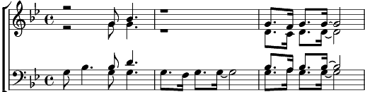

Refrain:
Owé Owé bangué ! banguéo
bangué bangué banguéo!
Owé bangué Owé banguo
1. De la sava-ane au Congo, Congo oh
Devant la case on a chaud n'a chaud oh
Faut le piler piler tôt le sorgho de ton silo
Le tam-tam est rigolo Owé banguo !
Owé bangué banguégué Owé banguo
Owé bangué banguégué hou Owé banguo
Refrain
2. De la banane à gogo, gogo oh
Avec un ju-us de coco, coco oh
Faut le piler piler tôt le sorgho de ton silo
Le tam-tam est au fourneau Owé banguo
3. De la palabre il en faut, l'en faut oh
Avant la cha-asse aux crocos, crocos oh
Faut le piler piler tôt le sorgho de ton silo
Le tam-tam a peur de l'eau ! Owé banguo
Refrain
4. De la gira-afe au rhino rhino oh
Ce bruit les gla-ace au Togo, Togo oh
Faut le piler piler tôt le sorgho de ton silo
Le tam-tam à fleur de peau ! Owé banguo
Coda:
Owé bangué! Owé banguo!
Bango!